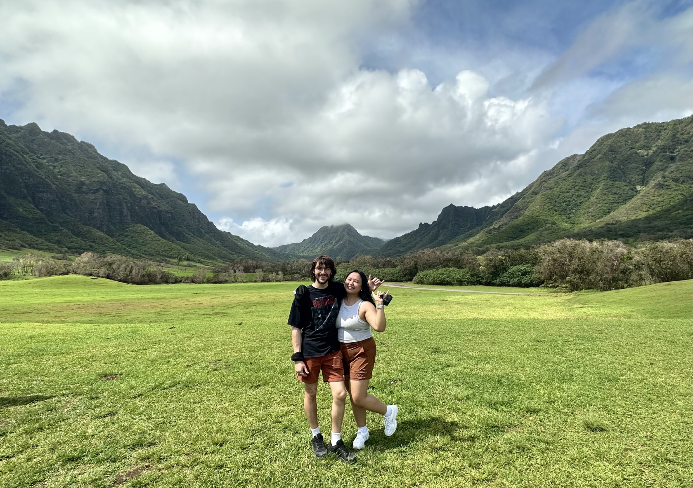

I am currently in the market for remote, hybrid, or onsite (Seattle) job opportunities and would love to chat :)
Nice to e-meet you, I'm Jennica!
I found ux design from taking a codecademy, buzzfeed-style online quiz, was intrigued by it, took a chance on it college, and now we're here — 4 years in and having the best time! I have experience working with multiple products across web, app, audio, and more recently, data analytics & science at Costco.
I see ux design as the love child of technology, art, and science; a brain-stimulating, complex puzzle, but for digital/real world problems. It's creative and fulfilling work, and it's also super cool to see your designs outside of prod!
I am excited about user experience/HCI and am eager to continue growing as a designer in the ever-changing world of tech.
Outside of design, I am:
- Baking bread and pastries
Currently learning foccacia, recently baked blueberry muffins, and will never attempt croissants (never ever ever again).
- Learning how to sew and sacrificing my clothes for practice in the process
I first picked up sewing back in 2018 and gave up after one week (lol), so this will be my redemption for sure.
- On the hunt to find the best Matcha latte (sweetened) around Seattle —
Top contenders so far (in order): URL Coffee, Moore Coffee, Wunderground Coffee.